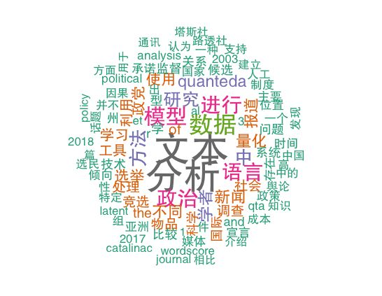
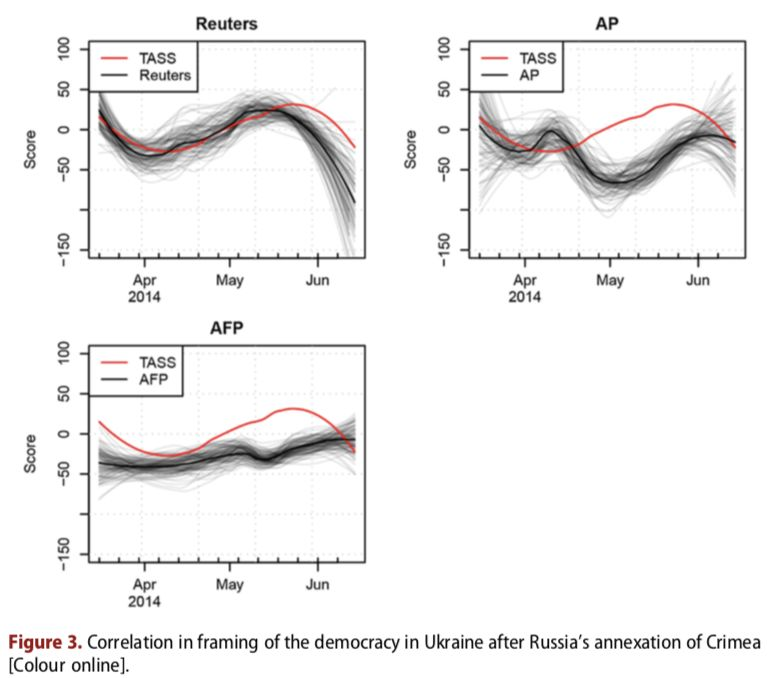
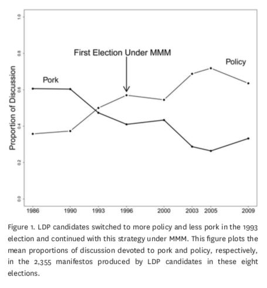

政观专栏：周源|量化文本分析：利用文本数据进行因果推论
收录于合集 #专栏文章 11个
作者简介： 周源，政文观止Poliview特邀作者，日本神户大学法学研究科政治学专业研究生，主要研究兴趣为量化研究方法、国际政治心理学。

量化文本分析（Quantitative Text Analysis, QTA）是指在社会科学研究中利用计算机技术来自动并且系统地处理大量文本数据的方法。随着自然语言处理等技术的发展，越来越多的政治学者已经注意到QTA方法在社会科学中的应用前景，并且利用这种方法做出了一系列研究成果。本文将首先说明QTA的基本概念，然后介绍QTA的研究案例和分析工具，最后对这一方法做出简要评析。
1. 什么是量化文本分析？
语言是政治发生的媒介。议员候选人会在竞选中辩论自己的观点和政策，当选后会在议会中讨论关于立法的问题，而法律或法案通过后官僚们也会广泛征求社会意见。国家在进行谈判时会通过语言来向对方发出信号，比如新闻报道记录了国际关系中冲突与合作的大量细节，恐怖组织通过招聘广告、杂志以及公开声明来表明他们的目的和诉求。所有这些都告诉我们，如果想要理解政治，就必须了解政治行为体所书写和言说的内容。
虽然政治学家们很早就意识到文本数据的价值，然而由于文本的数量过于庞大，对所有文本进行人工阅读几乎是一项不可能的任务，因此学者们长期以来对利用文本数据进行因果推论感到颇为踌躇。到了1990年代，随着计算机技术的进步、电子数据的增加以及互联网的出现，自然语言处理技术得到了迅速发展。进入21世纪后，人工神经网络等机器学习模型的使用使得自然语言处理技术进入了更快的发展阶段。在自然语言处理技术的基础上，学者们开发出了Wordscores(Laver et al. 2003)、Latent Dirichlet Allocation(Blei et al. 2003)、Wordfish(Slapin and Proksch 2008)、Word2vec(Mikolov et al. 2013)等一系列量化文本分析模型。
不同的研究往往会使用不同的文本分析模型，但是并不存在一种能够普遍适用于分析各类文本数据的最好模型。在一种文本数据分析中表现良好的模型，并不一定会在分析其他数据中表现良好。因此，学者们一般会根据自己所研究的问题和研究设计来选择最合适的模型。文本分析既可以用于验证文章的内容、影响力，也可以用于推测作者的真实意图，还可以将文本作为代理来测定难以直接测量的社会现象。例如，可以通过系统分析某类话题的新闻报道，来检验媒体报道的公正性；将新闻数据与舆论调查数据相结合，来检验新闻媒体的影响力；通过分析国营媒体面向外国公众的新闻报道，来推测一个国家对外战略的优先课题；通过分析特定时间段内社交媒体的数据，来测量关于特定话题的公众态度的变化。
文本分析的模型可分为监督学习模型（Naive Bayse、Wordscores、Random Forest等）、非监督学习模型（Wordfish、Correspondence Analysis、Topic Models等）、半监督学习模型（Newsmap、Latent Semantic Scaling等）。监督学习可以比较有效地对结果进行控制，然而需要花费大量的时间和工作来准备学习数据，是一种成本较高的方式。无监督学习虽然成本较低，但是无法对结果进行控制，因此很难基于人文社会科学的理论来进行。目前来说，半监督学习是一种性价比较高的模型，虽然结果的精确度不及监督学习高，但是由于成本较小，可以在有限的时间和花费下得到相对满意的结果。
2. 量化文本分析的研究案例
上文已经提到，量化文本分析可以用于各种各样的研究目的。以下将简单介绍几个QTA应用于政治学与国际关系研究的案例。
政党的政策位置（policy position）是联系政党和选民的一个关键纽带。关于政党位置的传统研究方法主要依赖对舆论及专家意见的调查或者对议会记名投票中分属各个政党阵营的议员行为的分析。然而，舆论调查不仅花费巨大，而且被调查者经常由于自身的立场而有意歪曲对政党位置的认知。在一些政党纪律严格的国家，议员的投票往往是在特定政治环境中作出的策略选择，而非反映党派的真实政策立场。对此，Laver等人(2003)提出了一种通过分析政党的竞选宣言来测定政党政策位置的Wordscore模型。Wordscore模型通常分为三个步骤。首先，建立一套由事先知道政策位置的文本组成的训练数据。其次，从训练数据中生成Wordscore。最后，用Wordscore模型来对新的文本进行评分。Laver等人将英国和爱尔兰1992年选举中各政党的竞选宣言作为训练数据，利用当时专家调查对各政党立场的评估建立了Wordscore模型，并且用此模型对1997年各政党的竞选宣言进行了评分。经过与1997年专家调查数据对比发现，该模型的预测与专家的评价呈现出较高的一致性。之后，他们将该模型用于分析非英语的德国政党竞选宣言，以及使用议员在国会中的发言来推测政党的政策位置，该模型同样显示出强大的预测能力。
国际危机中的对外宣传是一个国家重要的战略能力。Watanabe（2017）对俄罗斯塔斯社关于乌克兰危机的报道如何通过西方主要通讯社（路透社、美联社、法新社）得到传播进行了实证研究。Watanabe从新闻数据库中以‘russia*’ or ‘ukrain*’为关键词，分别下载了2013-2014年之间的90,131篇塔斯社报道，21,795篇路透社报道，12,154篇美联社报道以及31,898篇法新社报道。他首先利用自动归类方法筛选出主要内容是关于乌克兰的报道，然后建立了一个潜在语义分析（Latent Semantic Analysis）模型并且以“民主”为框架对各个通讯社的报道进行了文本分析。结果发现，路透社在俄罗斯吞并克里米亚后三个月内的报道与塔斯社呈现出高度相关的关系。虽然这并不能说明路透社与塔斯社存在某种合谋，但是却揭示了全球新闻汇集和分散系统脆弱的一面。由于各类新闻媒体对于国外新闻的获取高度依赖于国际通讯社，而西方通讯社发布的新闻通常会作为权威来源被众多新闻门户转载，路透社所发布的包含俄罗斯对外政治宣传的新闻在国际上广泛传播所产生的政治影响值得引起关注。

图片来源：Watanabe(2017)
候选人的选举策略是比较政治学研究的一个重要课题。虽然政治学家一般都认为不同选举制度下候选人会采取不同的竞选策略，并且对此给出了各种各样的解释，但是却很少有学者将他们的解释进行实证检验。Catalinac(2016)认为，候选人在选举制度中面临的党内竞争越大，就越倾向于承诺特殊型物品（particularistic goods）；反之，则倾向于承诺方案型物品（programmatic goods）。在此，特殊型物品是指利益被集中分配给特定的选民而成本被分散于剩余人口之中的物品，而方案型物品是指利益被大多数人口所享有的物品。Catalinac将1986-2009年之间日本众议院8次选举中7497名严肃候选人的竞选宣言作为数据，并且利用LDA（Latent Dirichlet Allocation）主题模型生成了69个不同的主题。在去掉3个声誉承诺（credit- claiming）的主题之后，Catalinac将剩余的66个主题分别按特殊型物品承诺（pork）和方案型物品承诺（policy）进行了分类。结果发现，在1994年选举制度改革后的选举中，自民党候选人的方案型物品承诺呈现出了明显上升趋势。这不仅验证了不同选举制度下候选人会采取不同的竞选策略，而且也解释了为什么有关国家安全的话题在选举制度改革之后呈现出上升的趋势。

图片来源：Catalinac(2016)
州一级的公共舆论对于美国政治过程存在重要影响。它不仅决定着州长和参议员选举的结果，而且也通过选举人团制度控制着总统选举的结果。然而，由于成本问题，时间密集的州一级的舆论调查难以实施。Beauchamp(2017)尝试用关于政治话题的Twitter数据来弥补调查数据的缺失，并且据此推测各州选民的投票意向。Beauchamp利用Twitter API收集了2012年9月1日至大选日之间关于政治的120多万条推文，经过一系列预处理后，建立了一套50个州×67天×10000个文本特征的数据集。在同一期间，有24个州存在时间较为密集的民意调查数据。于是，在用这24个州的数据对他的模型进行训练之后，Beauchamp使用这些模型来预测其他州的选民投票倾向。结果证明，他的模型能够比较正确地测量、补充和预测不同州以及不同时间的选民投票倾向。另外，他在分析中还发现，政治倾向偏左的地区更多引用外部链接和讨论地区问题，而政治倾向偏右的地区更多利用转推和讨论国家问题。这一发现与现有的政治心理学理论存在一致的关系。
利用文本分析方法对中国社交网络进行研究的案例，可参见Roberts(2018)，此处暂不做详细介绍。
3. 量化文本分析的工具
目前市面上存在大量的文本分析工具，然而功能齐全并且效率较高的并不多见。在商用领域，文本分析工具主要有QDA Miner/Wordstat、Wordsmith、LIWC（词典分析）等。基于编程语言的文本分析工具，主要有Java语言的Mallet(话题模型)、Yoshikoder（词典分析）、Lexicoder（词典分析），R语言的tm、tidytext、quanteda包，以及Python语言中的Natural Language Toolkit、Gensim等。本文将主要介绍伦敦政治经济学院的Kenneth Benoit教授团队开发的R语言组件quanteda。
与其他文本分析工具相比，quanteda具有以下几个优势。首先，quanteda是一款免费的开源的组件。与昂贵的商用软件相比，任何具有R语言基础的研究者都可以比较容易地使用quanteda。其次，quanteda的开发团队多是从事政治学与国际关系研究的学者，其功能设计更适合社会科学研究。Quanteda的函数不仅可以对文本进行各种统计分析和模型拟合，而且自带的绘图函数可以方便地将结果进行可视化。再者，quanteda运算速度快，内存占用少，一般学者利用个人电脑便可进行较大规模的文本分析。与tm、tidytext等R语言组件相比，quanteda在分词、选取文本特征、建立文本特征矩阵等运算中的速度具有压倒性优势。另外，quanteda不仅支持英文、德文等欧洲语言，还支持中文、日文、韩文等东亚语言，并且支持希伯来语、阿拉伯语等小语种文本分析。这对于欧美以外的政治学者来说无疑是一个非常重要的优点。
关于quanteda的具体使用方法，可参见渡边耕平与Stefan Müller编写的在线教程（https://tutorials.quanteda.io/）。对于有R语言基础的学习者，可以参考quanteda官方网站的快速入门指南（http://docs.quanteda.io/articles/pkgdown/quickstart_cn.html）。需要注意的是，由于每种语言都有各自的语法和特性，因此不同语言的文本分析往往需要进行不同的预处理，以确保分析结果的准确性。
4. 关于量化文本分析的一些探讨
虽然量化文本分析方法相比传统的内容分析具有某些优势，然而其目的并不是取代对于文本的人工阅读。人工阅读虽然只能处理少量的文本，但是却可以深入理解文本背后的含义，以此来进行判断；计算机虽然可以短时间处理海量文本数据，然而却很难理解文本的深刻含义。因此，自动文本分析与人工阅读仍然是相辅相成关系，使用量化文本分析方法应该基于对于研究问题的深入了解。
目前，量化文本分析方法在欧美已经成为政治学主流研究方法之一。然而，在中日韩三国却很少有学者使用这一方法。渡边耕平和Oul Han对这一现象的原因进行过一些有益的探讨（参见渡边耕平个人网站：https://koheiw.net/?p=766）。他们认为，QTA方法没有在亚洲学者中普及并非因为亚洲学者没有相关的研究需求，而主要是因为一些技术性原因，包括工具、数据、技能、文献等。在文本分析工具方面，能够对亚洲语言进行分析的工具并不太多。日本学者樋口耕一开发的文本分析工具KH Coder支持日语、汉语、俄语和韩语，但是日本之外的学者很少有人使用这一软件。Quanteda支持所有Unicode国际化组件（International Components for Unicode, ICU）中的语言，但是在亚洲的使用者不是很多。而一些Python组件往往不能很好地处理Unicode，并且严重依赖特定系统。在数据方面，虽然官方政治文件在日本和韩国都可以公开获取，但是非官方的政治文本（比如竞选宣言）并没有系统地公开。另外，收集新闻媒体数据常常涉及版权问题，这增加了对新闻报道进行文本分析的难度。在技能方面，文本分析虽然并不要求专业的编程知识和复杂的统计方法，但是却要求研究者掌握基本的数据收集（例如API、网页爬虫）、数据分析（例如回归分析、网络分析、R语言基本操作）、研究设计（社会科学领域的专业知识）的知识。在亚洲，目前几乎没有大学开设文本分析课程来系统传授文本分析所需的知识。在文献方面，关于文本分析的教科书大多侧重编程技能或者复杂的算法，而不是前面提到的系统的量化文本分析知识（据说Benoit教授正在编写一本社会科学中量化文本分析的教科书）。另外，不同语言的文本分析所需的教科书可能会略有不同（quanteda网页教程正在多语言化过程中）。虽然欧美学术杂志比较欢迎使用新方法的文章，但是对亚洲语言进行文本分析的文章很难在英文期刊得到发表。笔者在此认为，不少中国的政治学与国际关系专业期刊对于前沿方法持比较开放态度，而文本分析方法相对来说较为“科学”，受意识形态制约相对较少，因此中国学者应该有动机学习和使用这种方法。
当然，还有不少学者认为，大数据方法强调相关性而非因果性，因此在以因果推论为最终目标的社会科学研究中价值有限。然而，Egami等(2018)表明，文本数据既可以作为处置（treatment），又可以作为结果（outcome），能够有效地测量出原因和结果之间的因果效应。因此，在中国政治学研究迅速发展的今天，文本分析方法更应值得中国学者关注。
参考文献
1.Beauchamp, N. (2017). Predicting and interpolating state‐level polls using Twitter textual data. American Journal of Political Science , 61(2), 490-503.
2.Benoit K (2018). quanteda: Quantitative Analysis of Textual Data. doi: 10.5281/zenodo.1004683, R package version 1.3.4, http://quanteda.io.
Blei, D.M., A.Y. Ng and M.I. Jordan. 2003. “Latent dirichlet allocation.” The Journal of Machine Learning Research 3:993–1022.
3.Catalinac, A. (2016). From pork to policy: The rise of programmatic campaigning in Japanese elections. The Journal of Politics , 78(1), 1-18.
4.Egami, N., Fong, C. J., Grimmer, J., Roberts, M. E., & Stewart, B. M. (2018). How to make causal inferences using texts. arXiv preprint arXiv :1802.02163.
5.Grimmer, J., & Stewart, B. M. (2013). Text as data: The promise and pitfalls of automatic content analysis methods for political texts. Political Analysis , 21(3), 267-297.
6.Laver, Michael, Kenneth Benoit and John Garry. 2003. “Estimating the policy positions of political actors using words as data.” American Political Science Review 97(2):311–331.
7.Roberts, M. E. (2018). Censored: Distraction and Diversion Inside Chinas Great Firewall. Princeton University Press.
8.Mikolov, T., Chen, K., Corrado, G., & Dean, J. (2013). Efficient estimation of word representations in vector space. arXiv preprint arXiv :1301.3781.
9.Slapin, Jonathan B. and Sven-Oliver Proksch. 2008. “A Scaling Model for Estimating Time-Series Party Positions from Texts.” American Journal of Political Science 52(3):705–722.
10.Watanabe, K. (2017). The spread of the Kremlin’s narratives by a western news agency during the Ukraine crisis. The Journal of International Communication , 23(1), 138-158.
审读：杨端程
编辑：吴温泉

“广告点一点，也是支持学术公益 ”
”
政文观止
微信扫一扫赞赏作者 __赞赏
已喜欢，对作者说句悄悄话
取消 __
发送给作者
发送
最多40字，当前共字
上一页 1/3 下一页
长按二维码向我转账
受苹果公司新规定影响，微信 iOS 版的赞赏功能被关闭，可通过二维码转账支持公众号。